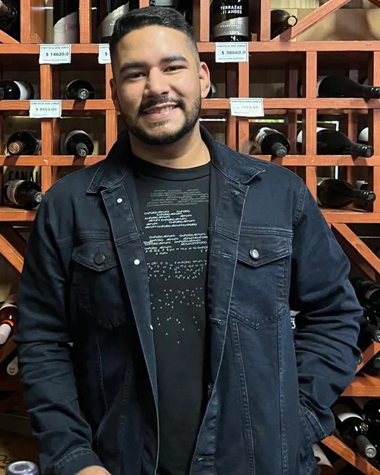

Desenvolvedor web front-end
Aylton
Alberto
Estudante de ADS, com foco em aplicações web e PWAs desenvolvidos com HTML5, CSS3, JavaScript Vanilla e Supabase.

Aylton AlbertoDesenvolvedor júnior
01 / Sobre
Sobre
mim.
Sou estudante de Análise e Desenvolvimento de Sistemas e busco minha primeira oportunidade como desenvolvedor júnior. Meu principal projeto é o GastoPro, um aplicativo PWA de controle financeiro offline-first, com foco em privacidade e LGPD e uma suíte com mais de 600 testes automatizados. Também desenvolvo o Tatame, uma solução para gestão de sistemas. Trago experiência sólida em gestão de operações e levo a disciplina e a consistência que desenvolvi em três anos de jiu-jítsu para a engenharia de software e o desenvolvimento web.
02 / Formação
Formação
 Análise e Desenvolvimento de Sistemas — Uninter — em andamento
41% da carga horária concluída
Análise e Desenvolvimento de Sistemas — Uninter — em andamento
41% da carga horária concluída
Português e inglês
03 / Projeto
GastoPro
Aplicativo de controle financeiro pessoal (PWA) com arquitetura offline-first.
Tecnologias: HTML5, CSS3, JavaScript Vanilla e Supabase (RLS).
PWAInstalável e com arquitetura offline-first
LGPDPrivacidade com foco na LGPD e exclusão de dados pelo cliente
600+Mais de 600 testes automatizados
- Importação de extrato (CSV, OFX e PDF)
- Relatórios em PDF, CSV e Excel
- Login com Google
04 / Experiência
Experiência
Gestão de operações — setor de serviços
Gestão de processos operacionais e administrativos sob alta pressão.
Organização de fluxos de trabalho e controle de indicadores de desempenho.
Liderança de equipes e atendimento a clientes exigentes em português e inglês.
Gerente — Boni Sushi Concept
Sommelier — Boni Villa Restaurante
Gerente — Hotel e Restaurante Exotica, Praia da Pipa
Maître — Bupitanga Hotel, Praia da Pipa
05 / Contato